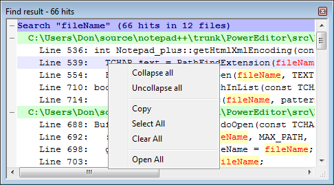

Texto original
Sugiere una traducción mejor
| Anterior: Buscar archivos | Buscar | Siguiente: cuadro de diálogo Buscar desactivado |

Los resultados de las búsquedas que devuelven varias instancias se muestran en una ventana acoplable (consulte
Ventana acoplable para obtener más información). Los resultados están clasificando por la respuesta de archivos y la línea que pueden ser pliegues para cada archivo por doble clic en el nombre del archivo (véase la
sangría: plegable / dpliage ).
Los resultados de esta ventana de " Resultados" se pueden suprimir usando la tecla DEL , línea, carpeta o búsqueda. Estas líneas se pueden manipular utilizando el menú contextual del botón derecho. Además, el texto de la ventana se puede copiar para su posterior procesamiento. Al hacer doble clic en un resultado se abrirá el archivo y la línea citada. El uso de abre todos los archivos que tienen una respuesta en las búsquedas mostradas.
muestra la ventana si está oculto y no está vacío, y se puede cambiar el foco entre ella y la ventana principal de Notepad ++ . Cuando la ventana no se muestra, y navegará a través de los resultados.
El color de los resultados depende de sus tipos. Consulte Diseñador de resaltado de sintaxis para obtener información sobre cómo cambiar los colores.